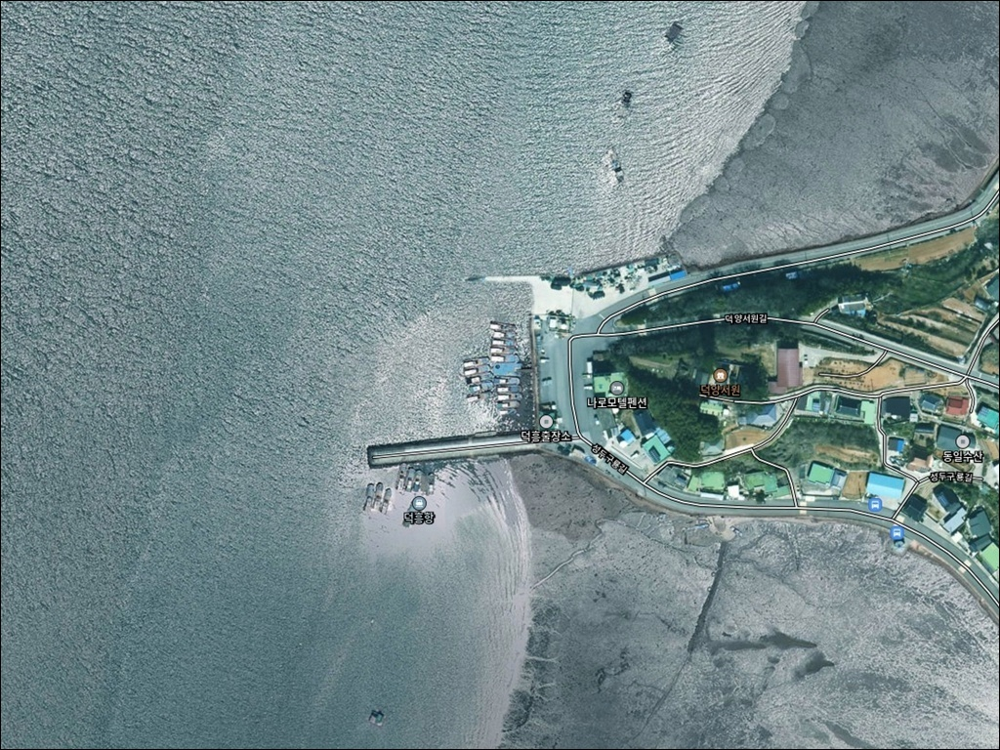
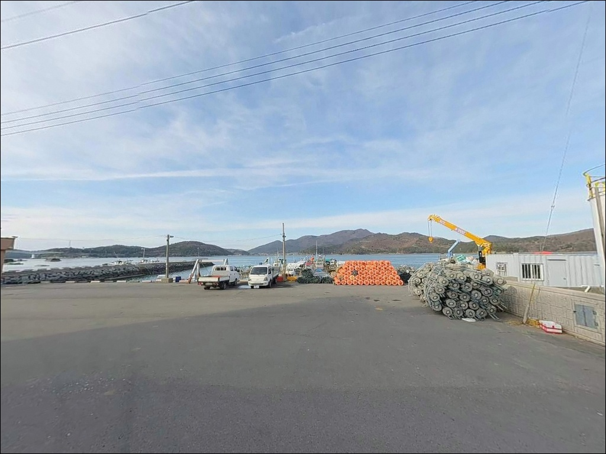
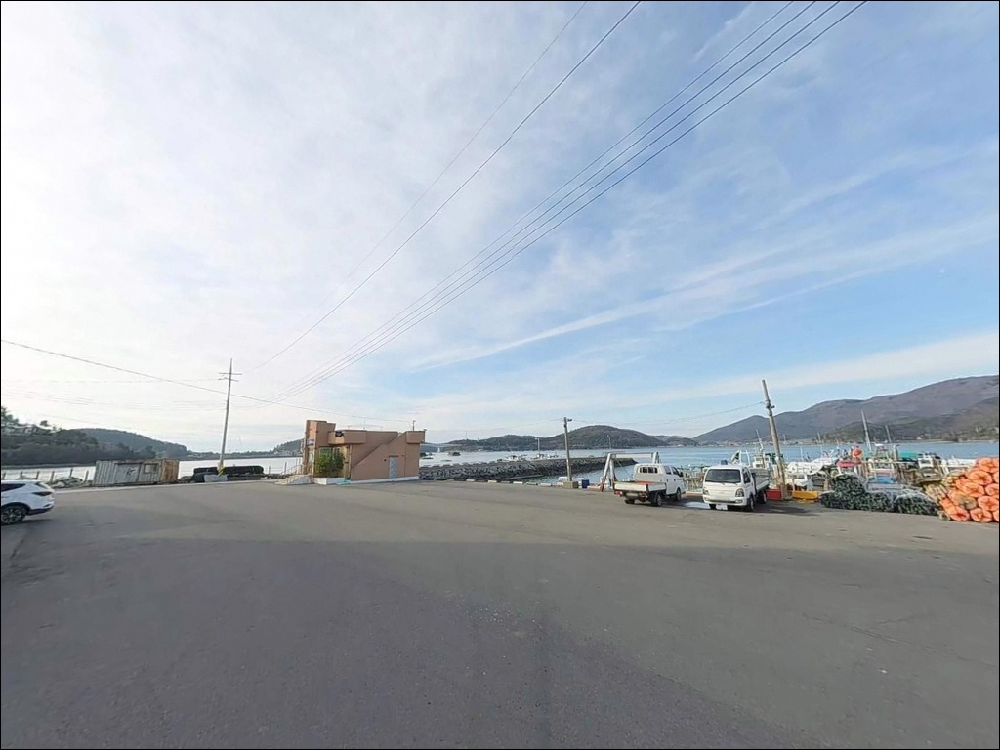
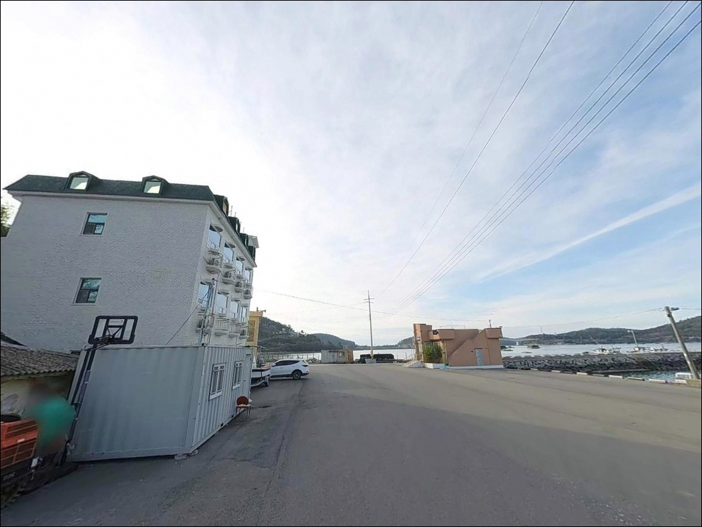
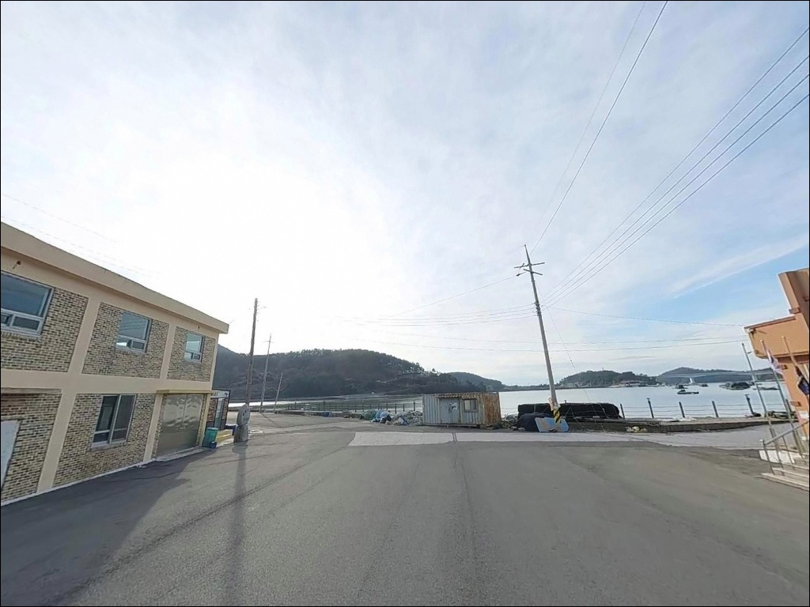
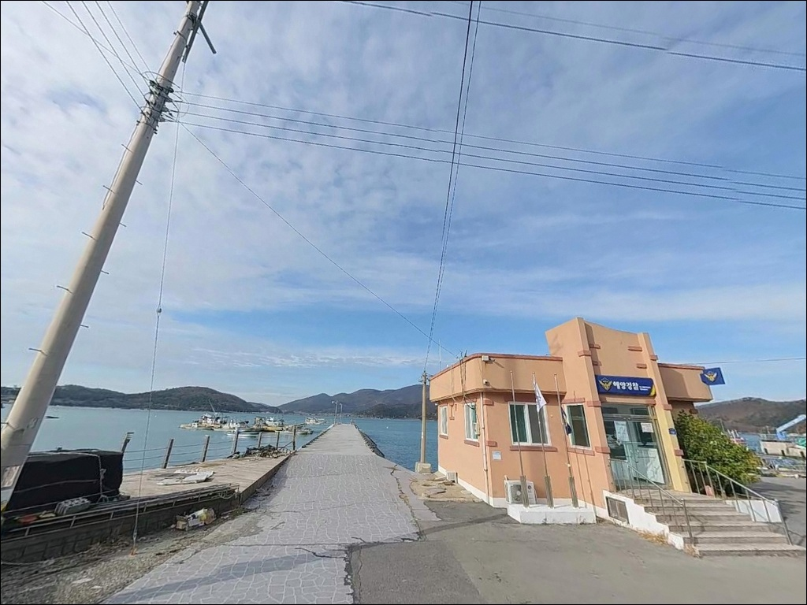
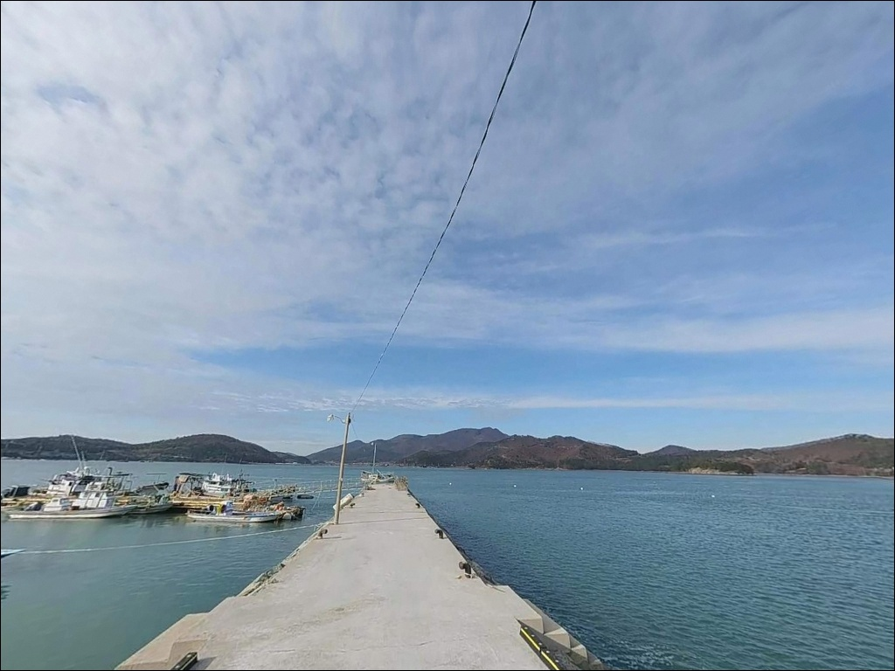
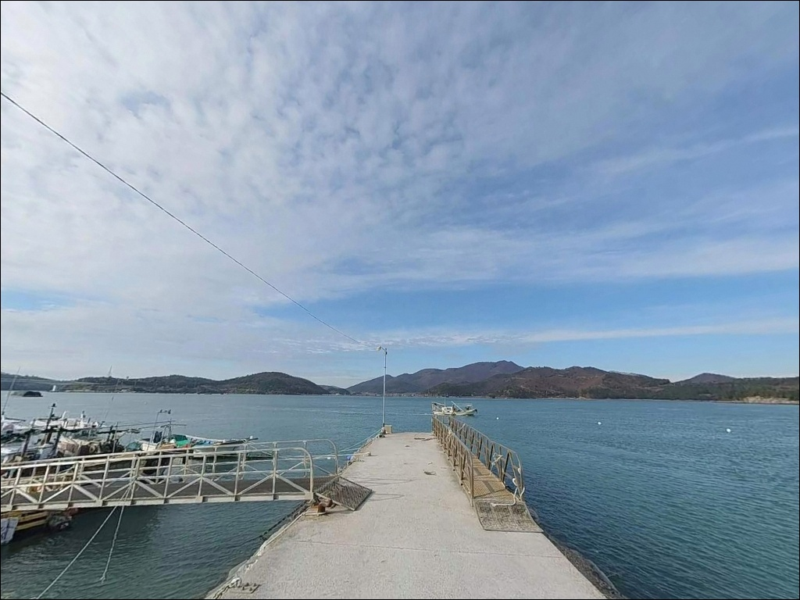
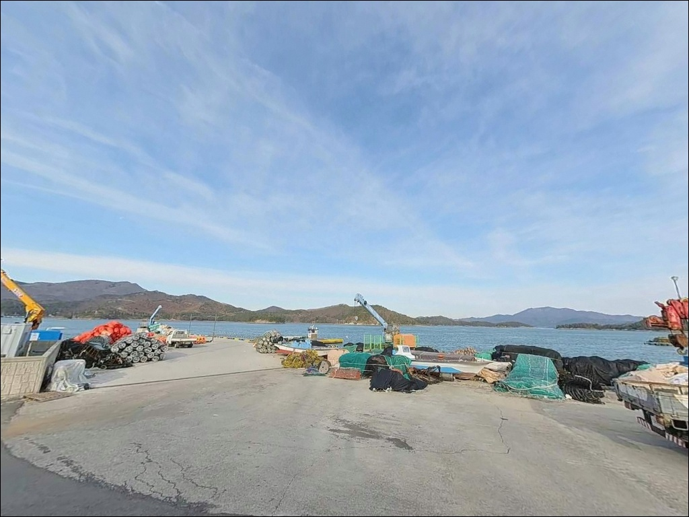

간조에 가면 자리 사라지는 고흥 덕흥항, 조금 물때 만조에 노리는 에깅 포인트


포인트 안내
덕흥항
전남 고흥군 동일면 덕흥리 695-7
조고차가 큰 남해 내만 해역에서
간조 타이밍에 도착하면
외항 방파제 끝단도 수심이 낮아져
채비를 내릴 자리 자체가 줄어듭니다.
덕흥항은 만조 전후 물때를 선택하는 것이
방문 성패를 결정하는 포인트입니다.
나로1대교를 건너 내나로도에 진입한 뒤
해안선을 따라 이어지는 덕흥리에
작은 어항과 해수욕장이 나란히 자리하고 있습니다.
방파제와 인접 갯바위가 결합된 구조로,
에깅·원투·루어를 복수로 시도할 수 있는
나로도 해역의 소규모 복합 포인트입니다.
이 글은 덕흥항의 진입 여건, 차박 환경,
물때 판단 기준, 낚시 스타일별 공략 조건에 집중합니다.
조황 단정이나 특정 어종 보장은
이 글의 범위에 포함되지 않습니다.

1. 진입 동선과 차량 접근 조건
나로1대교(나로대교)를 건너 내나로도로 진입한 뒤
해안선을 따라 동일면 덕흥리 방향으로 이동합니다.
덕흥리 삼거리에서 좌회전하면
덕흥해수욕장 주차장과 항구 진입부까지
직접 연결되는 포장도로가 이어집니다.
전 구간 포장 도로로 일반 승용차 기준
무리 없이 진입할 수 있는 수준입니다.
마을 진입로 일부 구간은 폭이 좁고
교행이 제한되는 구간이 포함되어 있습니다.
대형 SUV나 캠핑카를 운행한다면
출발 전 위성지도로 덕흥리 진입로 구간을
미리 확인하는 편이 안전합니다.
항구 내부 물양장 및 선착장 앞 공터에서
회차는 가능한 구조입니다.
주차 후보 1순위는 덕흥해수욕장 주차장입니다.
약 2,640㎡ 규모로 조성되어 있어
항구와 해변을 동시에 오갈 수 있는
가장 넓은 거점 공간입니다.
방파제 입구 진입부와
선착장 인근 노상 공간도 보조 후보로
활용할 수 있습니다.

2. 차박 환경과 야간 체류 여건
덕흥해수욕장 주차장은
해수욕장 개장 기간(7~8월)에 관리 인력이 상주하며
화장실과 취사장 등 기본 부대시설이 운영됩니다.
비시즌에는 시설 운영 여부를 사전에 확인하는 편이 좋습니다.
주차 공간이 넓고 진입로가 정리되어 있어
낚시를 마치고 단기 대기하는 용도로
접근하기 좋은 구조입니다.
항구 인근에는 민가와 소규모 숙박·민박 시설이
해안선을 따라 분포하는 구조입니다.
완전한 외딴 어촌 분위기는 아니며,
어느 정도 주거·관광 혼합 지역에 가까운 환경입니다.
방파제 끝단 방향으로 나갈수록
야간 가로등 영향이 줄어들기 때문에
개인 조명 장비는 필수로 챙겨야 합니다.
외항 방향은 나로도 해역을 향해 열려 있어
기상 조건에 따라 바람 영향을 받을 수 있습니다.
강풍 예보가 있는 날에는
차량 체류 위치를 방파제에서 해수욕장 주차장 쪽으로
옮기는 편이 안전합니다.


3. 주변 편의시설 및 인프라 현황
덕흥항 반경 3km 이내에는
프랜차이즈 편의점이나 대형 마트가 없습니다.
동일면 소재지 방면에 소규모 생활상권이 있으나
운영 시간과 품목이 제한적입니다.
출조 전 나로1대교를 건너기 전,
고흥읍 또는 포두면 방향에서
식수·얼음·낚시 소품을 미리 조달하는 편이 실질적입니다.
반경 10km 내에서 가장 가까운 주요 거점은
나로도항(외나로도 신금항)입니다.
약 8~10km 거리로,
낚시 장비점과 상권이 집중되어 있어
소품이 부족할 경우 이 동선을 활용할 수 있습니다.
응급 상황에 대비한 연료와 비상약품은
출발 전에 갖추는 것이 기본입니다.

4. 낚시 자리가 달라지는 조건 — 물때 판단법
덕흥항에서 방문 전 가장 먼저 확인할 것은
물때입니다.
내나로도 해역은 조고차(간만의 차)가 크고
간조 시 연안 수심이 급격히 낮아지는
전형적인 남해 내만 구조입니다.
사리 물때 출조는 조류가 과도하게 빨라
채비 컨트롤이 어려워지는 경우가 생깁니다.
조금 전후 물때에 만조를 끼고
출발 시각을 맞추는 것이
이 포인트의 기본 판단 기준입니다.
바다타임에서 동일면 덕흥리 기준 물때를 확인하고
중들물 이후 만조 전후 타이밍에
입장하는 것이 낚시 가능 시간을 최대로 활용하는 방법입니다.
당일 기상 변화가 빠른 섬 지역 특성상
출발 당일 아침 기상청 해상 예보를
한 번 더 확인하는 것이 좋습니다.
방파제 외항 방향은 파도 직격 구간이 될 수 있어
구명조끼 착용과 야간 헤드랜턴 준비는
선택이 아닌 기본 안전 장비입니다.

5. 지형 기반 낚시 여건 분석
덕흥항은 방파제와 갯바위가 나란히 이어지는
복합 낚시 포인트입니다.
내항은 소형 어선 정박 위주의 얕은 수심 구조이고,
외항 방파제 끝단 방향으로 나갈수록
수심 변화가 빠른 구간이 형성됩니다.
방파제 끝단과 외항 가장자리가
낚시의 주요 자리입니다.
방파제 외측과 인접 갯바위에는
암반과 해조류 혼합 지형이 발달해 있습니다.
이 구조는 두족류와 바닥 어종이
은신처로 활용하기 좋은 조건으로,
나로도 해역 전체가 갑오징어 주요 서식 해역인
점과 맞물려 에깅 포인트로서의 조건을 갖추고 있습니다.
바닥은 뻘과 모래 혼합 지형으로,
원투 채비의 밑걸림은 적은 편입니다.
외나로도와 내나로도 사이 수로 영향으로
조류 흐름이 방파제 끝단에 직접적으로 닿는 구조입니다.
조류가 흐르는 타이밍에는
회유성 어종이 지나는 길목 역할을 하는
지형 조건이 형성됩니다.
출조 전 최신 조황은 반드시 검색해 보시기 바랍니다.


6. 포인트에 어울리는 낚시 스타일
덕흥항에서 지형 조건과 가장 잘 맞는 방식은
갑오징어 에깅입니다.
외항 방파제 끝단과 갯바위 암반 지형은
에기 채비가 자연스럽게 탐색할 수 있는
구조 조건을 갖추고 있습니다.
중들물 이후 만조 전후 타이밍에
외항 방면으로 에기를 던지고
천천히 끌어오는 방식이 이 포인트에 맞습니다.
원투낚시는 방파제 끝단에서
외항 방향으로 투척해
모래뻘 경계 지대를 노리는 방식이 유효합니다.
바닥 걸림이 심하지 않은 뻘·모래 혼합 지형이라
초보자도 접근하기 어렵지 않은 편입니다.
보구치(백조기)·도다리·붕장어 등
바닥 어종이 주요 대상이 되는 공략 방식입니다.
루어낚시는 방파제 외항 측면과
수로 방향을 향해 캐스팅하는 방식이 어울립니다.
조류가 흐르는 구간이 형성되는 외항 끝단과
갯바위 주변 암반 경계를
중소형 루어로 천천히 탐색하는 방법이 적합합니다.
릴찌낚시는 방파제 콧부리 방향
조류가 꺾이는 지점을 집중 공략하는 스타일로,
나로도 해역 특성상 감성돔을 기대해볼 수 있는 방식입니다.

7. 대안 포인트와 플랜 B 동선
덕흥항의 물때가 맞지 않거나
주차 공간이 여의치 않을 때
가장 가까운 첫 번째 대안은
나로1대교(나로대교) 아래입니다.
내나로도와 외나로도 사이 수로를 끼고 있어
조류 흐름이 살아 있는 루어·에깅 자리이며,
덕흥항에서 2km 내외로 접근이 빠릅니다.
약 8~10km 거리에 위치한
나로도항(외나로도 신금항)은
수심이 깊고 주차 여건이 안정적인
이 권역의 기준 거점 포인트입니다.
낚시 장비점과 상권이 집중되어 있어
덕흥항을 처음 방문한다면
나로도항을 먼저 들러 소품을 보완하고
이동하는 동선이 효율적입니다.
내나로도 해안선을 따라
성두선착장(나로대교 진입 직후 약 500m~1km)도
동일한 해역 조건의 대안 포인트로 활용할 수 있습니다.
외항 수심과 낚시 패턴이 덕흥항과 유사하며,
덕흥항 반응이 없을 때
같은 날 연속으로 탐색하기 좋은
동선에 있습니다.

물때 하나 맞추면
덕흥항의 지형이 다르게 보입니다
에깅과 원투를 함께 노리는 낚시인이라면
방파제와 갯바위가 나란히 붙어 있는
덕흥항의 지형 조건은 잘 맞는 구조입니다.
덕흥해수욕장 주차장이 바로 옆에 있어
진입과 거점 확보 면에서
소규모 어항치고는 여건이 갖춰진 편입니다.
다만 간조 타이밍에 도착하거나
사리 물때를 피하지 않으면
낚시 가능 시간이 짧아지고
채비 운용 자체가 어려워집니다.
물때 확인, 진입로 사전 점검, 자급 준비,
이 세 가지를 갖추고 간다면
나로도 해역의 조용한 포인트로
기억에 남을 수 있는 곳입니다.
해수욕장과 어항이 나란히 있는 구조 덕분에
낚시를 마치고 조용히 하룻밤 머무는
차박 여행자에게도 나쁘지 않은 선택지입니다.
바다 내음을 가까이 두고
덕흥항 방파제 끝단에서 밤낚시와 차박을
함께 즐기고 싶은 낚시인에게 맞는 포인트입니다.